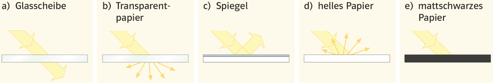

Station 6 – Was passiert mit Licht an Gegenständen?
Du kannst diese Station sofort bearbeiten. Es sind keine Vorkenntnisse nötig.
Diese Station kannst du bearbeiten, wenn du noch nicht experimentieren konntest.

Einleitung
Damit wir einen Gegenstand sehen können, muss Licht von ihm in unser Auge gelangen. Doch Licht verhält sich nicht immer gleich, wenn es auf einen Gegenstand trifft. Je nach Material und Oberfläche kann Licht auf unterschiedliche Weise verändert werden. Diese Veränderungen bestimmen, ob ein Gegenstand hell, dunkel, glänzend oder durchsichtig erscheint.
Informationstext
Wenn Licht von einer Lichtquelle ausgeht und auf einen Gegenstand trifft, kann es verschiedene Wege nehmen. Ein Teil des Lichts kann durch den Gegenstand hindurchgehen, ein anderer Teil kann zurückgeworfen werden, und wieder ein anderer Teil kann im Material „verschwinden“.
Bei einer sauberen Glasscheibe zum Beispiel geht das Licht nahezu ungehindert hindurch. Dabei wird seine Richtung kaum verändert. Deshalb können wir durch Glas hindurchsehen. Man sagt: Das Material ist durchsichtig und lässt das Licht hindurchtreten.
Anders verhält es sich bei Materialien wie Transparentpapier oder beschlagenem Glas. Hier wird das Licht beim Durchgang in viele Richtungen abgelenkt. Die ursprüngliche Richtung geht verloren. Diesen Vorgang nennt man Streuung. Obwohl Licht hindurchgeht, können wir nicht klar hindurchsehen, weil das Licht ungeordnet weiterläuft.
Trifft Licht auf eine sehr glatte Oberfläche, wie bei einem Spiegel, wird es gezielt in eine bestimmte Richtung zurückgeworfen. Dies nennt man Reflexion. Dabei gilt: Das Licht wird nicht in alle Richtungen verteilt, sondern nur in eine ganz bestimmte Richtung gelenkt. Deshalb kann man einen Spiegel nur aus bestimmten Blickwinkeln gut sehen.
Bei den meisten Alltagsgegenständen ist die Oberfläche jedoch rau. Wenn Licht auf solche Oberflächen trifft, wird es in viele verschiedene Richtungen zurückgeworfen. Man spricht hier von diffuser Reflexion oder Streuung. Dadurch erscheint der Gegenstand aus vielen Blickrichtungen sichtbar.
Dunkle Materialien verhalten sich wieder anders. Sie lassen das Licht weder hindurch, noch werfen sie es stark zurück. Stattdessen wird das Licht im Material aufgenommen. Diesen Vorgang nennt man Absorption. Ein Gegenstand, der viel Licht absorbiert, erscheint uns dunkel oder schwarz.
Zusammengefasst gilt also:
Wenn Licht auf einen Gegenstand trifft, kann es durchgelassen, gestreut, reflektiert oder absorbiert werden. Welche dieser Möglichkeiten eintritt, hängt stark von der Oberfläche und dem Material des Gegenstands ab.
Aufgabe 1 - Beschreiben
Beschreibe für die folgenden Materialien jeweils in ganzen Sätzen, was mit dem Licht passiert:
a) Glasscheibe
b) Transparentpapier
c) Spiegel
d) helles Papier
e) mattschwarzes Papier
Gehe dabei darauf ein, ob das Licht hindurchgeht, reflektiert, gestreut oder absorbiert wird.

Aufgabe 2 -Nasse Fahrbahn
Eine nasse Straße erscheint im Scheinwerferlicht oft dunkler als eine trockene. Erkläre dieses Phänomen mithilfe der Begriffe Reflexion und Streuung.
Aufgabe 3 -Projektionswand
Leinwände im Kino oder in der Schule sind weiß und haben eine raue Oberfläche. Erkläre, warum das sinnvoll ist und warum ein Spiegel ungeeignet wäre.
Aufgabe 4 - Katzenaugen
Katzenaugen leuchten, wenn sie im Dunkeln angestrahlt werden. Erkläre, was hier mit dem Licht passiert und warum wir das sehen können.
Zusatzaufgabe (freiwillig)
Überlege dir selbst ein Beispiel aus dem Alltag, bei dem Licht reflektiert, gestreut oder absorbiert wird, und erkläre es in wenigen Sätzen.
Tipp
Achte besonders darauf:
- wie die Oberfläche eines Gegenstands beschaffen ist
- in welche Richtung das Licht gelenkt wird
- ob Licht zum Auge zurückgelangt